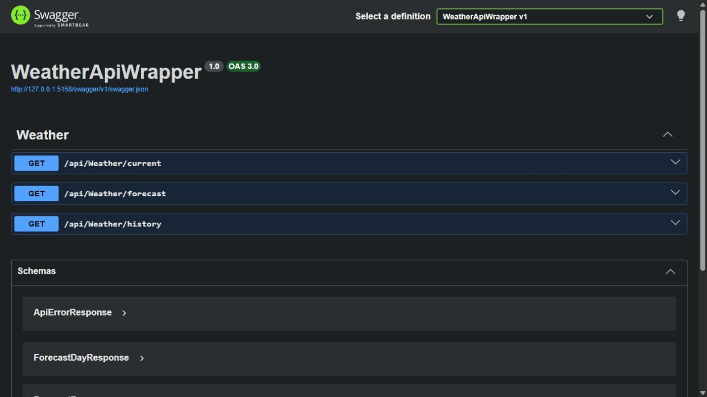
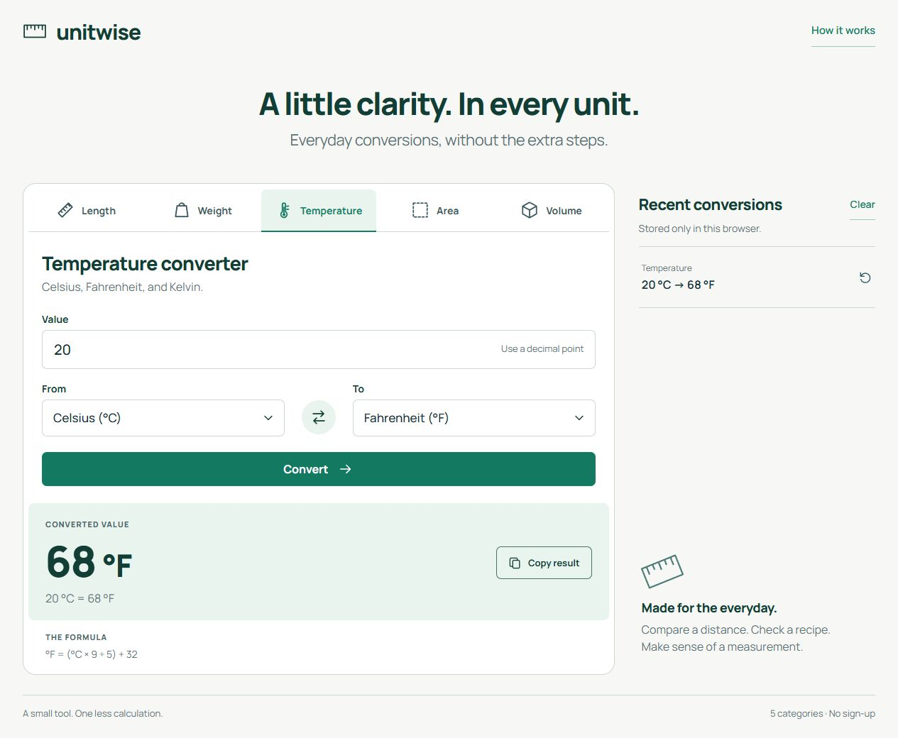

FOUNDATIONS
An engineering mindset
Computer Engineering studies; breaking problems down and thinking systematically.
Code, curiosity and a little story.
I build APIs with C# and ASP.NET Core, bringing my systems experience to clear, maintainable applications.
while (curious) { learn(); }I’m curious about how technology works, and how it could work better.
I’m a Computer Engineering graduate. My previous full-time IT Specialist experience involved Windows Server, Active Directory, troubleshooting and Excel/VBA automation.
My focus today is .NET backend development. In my C# and ASP.NET Core portfolio applications, I pay attention to clear API contracts, input validation, error handling and automated tests.
More on my GitHub profile (new tab)FOUNDATIONS
Computer Engineering studies; breaking problems down and thinking systematically.
EXPERIENCE
Hands-on IT operations with Windows Server and Active Directory.
TODAY
API development, testable applications and Junior .NET Backend Developer opportunities.
Two projects, different problems.
A shared focus on clear code
and verifiable behavior.

PROJECT / 01APPLICATION SCREENAn API that normalizes an external provider’s weather data, with caching, error handling and outbound HTTP resilience.
Read the case study Source code (new tab)
PROJECT / 02APPLICATION SCREENLength, mass, temperature, area and volume conversions. The web interface and JSON API share the same C# conversion engine.
Read the case study Source code (new tab)Each project is part of a learning process.
All my work on GitHub (new tab)The tools and development practices I use in my portfolio projects.
Explicit contracts, input validation and consistent error responses. Endpoints documented with Swagger / OpenAPI.
Unit, application and HTTP integration tests with xUnit, covering expected results, boundaries, failures and negative cases.
Runnable environments with Docker and Docker Compose; automated build and test steps with GitHub Actions.
I bring my troubleshooting experience from IT operations to software development, considering error handling, configuration and application behavior together.
04 / CV
My .NET backend focus, technologies and selected projects. Download my technical CV in Turkish or English.
Let’s talk about .NET backend development,
projects or opportunities to work together.
Opens your email app; send your message from there.
You can also reach me on LinkedIn (new tab)